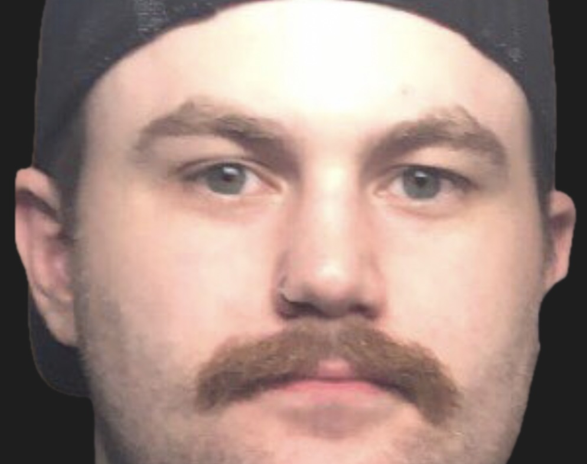

░▒▓ data tells a story ▓▒░

Howdy, I'm Jacob — I have a passion for sports and silly projects, with a primary focus on hockey analysis. I try not to take myself too seriously.
I earned my Master of Science degree in Applied Statistics from the University of Wisconsin–La Crosse in May 2024.
Based in Western Wisconsin.
What I Do
I'm a Biostatistician working in medical research, where I spend most of my time wrangling data, building statistical models, and trying to explain p-values to people who don't care about p-values. My core toolkit is R — it's where I do my best work — though I've also picked up Python along the way.
I'd describe myself as someone who genuinely loves learning, picks things up quickly, and can't resist poking at a problem until it makes logical sense. Critical thinking is kind of my thing, for better or worse.
Outside of medical research, my not-so-secret ambition is to work as a Data Scientist for an NHL team — digging into quantitative data to surface the kind of game, strategy, and roster insights that actually move the needle in hockey operations. I figure if I'm going to spend the next 35 years of my life working, it might as well involve hockey.
Along with my love of hockey, I also enjoy listening to and making music, reading, skateboarding, birdwatching, and tossing my son up in the air a little too high and making my wife worry that I won't catch him.
tools & skills
get in touch
the best way to reach me is jacob.feinas.stats@gmail.com.
you can also find me on github.